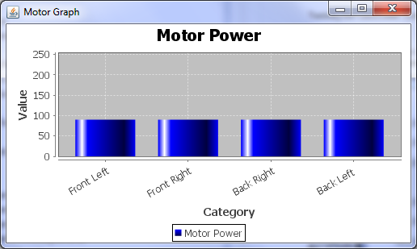
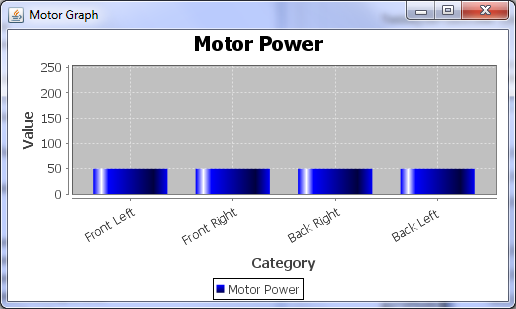
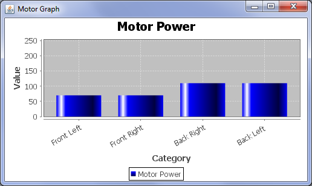
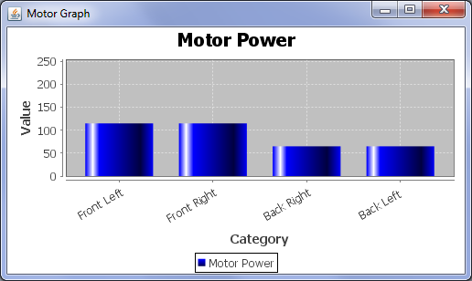
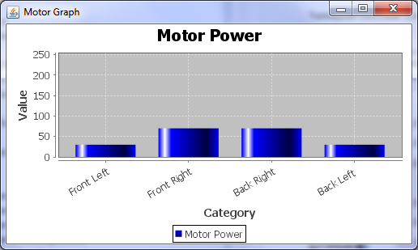

The Quadcopter is controlled by a Bluetooth Nintendo Wiimote and the controls are simple. The below picture circles all relevant controls and gives a brief description of what they do. In order to
start using the Quadcopter ensure the Bluetooth WiiMmote is connected to your computer (Our solution is Windows Only). Plug the Arduino into one of your usb ports, ensuring it is powered.
Start the SmeedAviation Java program, if the Wiimote did not vibrate it is not connected properly. Switch the engine battery circuit on. If the set-up worked correctly you should now be able to
control the Quadcopter.


When pressing Button-B (On the back of the Wiimote) the thrust increases, the
engine power levels can be seen on a graph that starts when the Java Application starts.

When pressing Button-A (On the front of the Wiimote) the thrust decreases, the
engine power levels will decrease. As shown in the image, in relation to the previous image.
When pressing the Forward (or up arrow) on the D-Pad, the power levels to the rear engines increase and
power to the front engine decrease.

When pressing the Back (or down arrow) on the D-Pad, the power levels to rear engines decrease and
power to the front engines decrease.

To bank-left press the Left arrow on the D-Pad, the power levels in the left engines decrease and
power to the Left engines increase.

To bank-right press the Right arrow on the D-Pad, the power levels in the Right engines decrease and
power to the Left engines increase.